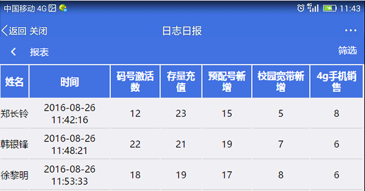
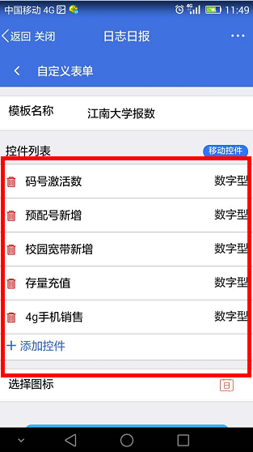

江苏移动ICT 2016-08-30
还在为校园迎新“放装”分布广、人员分散、沟通难度大而发愁么？还在为实时“放装”结果更新不及时，管理难度大而苦恼么？不要愁，V网通移动审批推出“日志日报”功能，专为解决人员分散情况下的数据上报、汇总和管理功能。
“放装”人员可以通过V网通，在现场随时随地填报放装情况。
区域组长可以通过V网通实时看到所在域内的各放装点实时汇总数据。让整个放装过程有序可控。
组长可以通过手机，随时定制想要的组员填写的日报内容，仅需简单点击，即可实现更加符合管理需要的日报填写模板。
产品联系人：郑长岭 15050561902
V网通移动审批让移动办公更高效